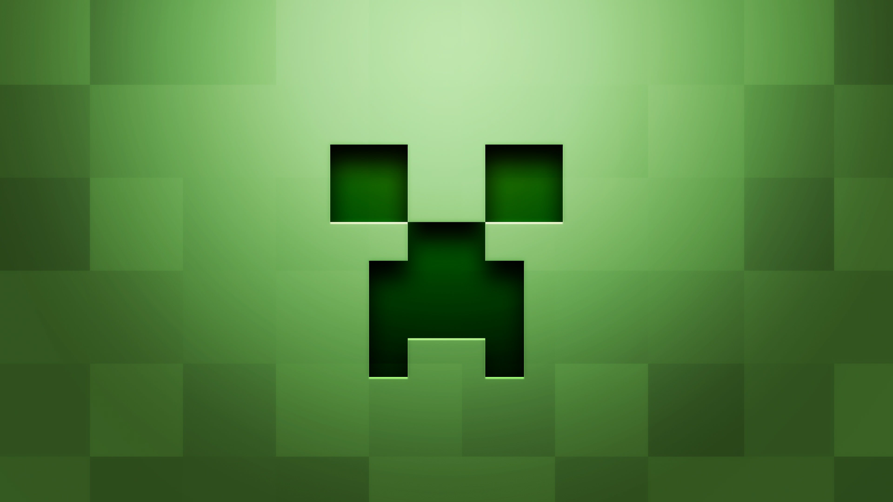

Minecraft es un juego de mundo abierto, y no tiene un fin claramente definido. Esto permite una gran libertad en cuanto a la elección de su forma de jugar. A pesar de ello, el juego posee un sistema que otorga logros por completar ciertas acciones. La cámara es en primera persona, aunque los jugadores tienen la posibilidad de cambiarla a una perspectiva de tercera persona en cualquier momento.
El juego se centra en la colocación y destrucción de bloques, siendo que este se compone de objetos tridimensionales cúbicos, colocados sobre un patrón de rejilla fija. Estos cubos o bloques representan principalmente distintos elementos de la naturaleza, como tierra, piedra, minerales, troncos, entre otros.
Los jugadores son libres de desplazarse por su entorno y modificarlo mediante la creación, recolección y transporte de los bloques que componen al juego, los cuales solo pueden ser colocados respetando la rejilla fija del juego. Los jugadores crean «granjas», que son estructuras y mecanismos para conseguir un determinado material más fácil (por ejemplo una granja que genera oro automáticamente). En el juego se pueden encontrar estructuras especiales como aldeas, galerías mineras, templos marinos, pirámides y templos selváticos.
• Inicio
Al inicio del juego, el jugador se encuentra en un mundo generado mediante un algoritmo, lo que permite que este sea teóricamente infinito y nunca se generen dos mundos iguales. El jugador es libre de desplazarse por el terreno, conformado por distintos biomas, entre los que se encuentran desiertos, sabanas, selvas, océanos, llanuras, tundras, etcétera. El juego posee su propio ciclo de tiempo de día y noche, siendo que un día en el juego equivale a 20 minutos en la realidad.
• Mapa
El mapa no se genera por completo al principio, sino que está dividido en chunks («trozos», «pedazos» traducido literalmente al español, pero sin adaptación oficial) de 16x16 bloques en horizontal. Los chunks cercanos al jugador se cargan en la memoria. A medida que este se desplaza, se generan y añaden nuevos chunks al mapa.
• Dificultad
Independientemente de los varios modos de juego también se puede definir la dificultad del juego, siendo el modo más tranquilo el pacífico, que a diferencia de las demás dificultades, no permite que aparezcan monstruos en el juego que puedan herir al jugador.

- Modos de juego
• Supervivencia
El modo supervivencia (survival en inglés) se basa en la vida real combinada con un poco de fantasía y se trata de la supervivencia al ataque de las múltiples criaturas que surgen en la oscuridad o de noche. El máximo aguante que tienen los personajes consta de 10 corazones (20 puntos de salud). En este modo las herramientas, armas y armadura se gastan con el uso.
• Creativo
En el modo creativo (creative en inglés) se centra enteramente en el aspecto de la construcción libre. Los jugadores poseen un suministro ilimitado de todos los bloques y objetos del juego, que pueden colocar y destruir de forma instantánea. Además, no son atacados por los monstruos, son inmunes a todo daño (aunque sí pueden morir cayendo al vacío si están en Java Edition) y pueden volar libremente por el mapa. En este modo no se pueden romper bloques sosteniendo espada, para prevenir la destrucción del entorno cuando el jugador golpea o ataca.
• Extremo
El modo extremo (hardcore en inglés) es idéntico al modo supervivencia, con la diferencia de que tras la muerte del jugador este ya no puede volver a revivir y la dificultad está fijada en difícil.
• Espectador
El modo espectador (solo disponible en la versión de Java) permite a los jugadores volar a través de bloques y ver el mundo sin interactuar con él. En este modo, la barra de acceso rápido se convierte en un menú que permite al jugador teletransportarse a los jugadores en la partida. También es posible ver desde el punto de vista de otro jugador o criatura. Se puede acceder a este modo utilizando el comando /gamemode spectator.
• Aventura
El modo aventura (adventure en inglés) está destinado a los jugadores que se dedican a crear mapas para usuarios que deseen jugar en línea o solos.
• Otros modos de juego no oficiales
Algunos usuarios o desarrolladores avanzados optan por crear sus propios modos de juego y aplicarlos en servidores o mapas de aventura para jugar en modo de un jugador. Sin embargo, estos modos de juego suelen verse poco y la mayoría de los servidores modifican algunas extensiones para hacer parecer que tienen un modo de juego personalizado.
En las primeras versiones preliminares de Minecraft, el único modo de juego disponible era similar al creativo actual. En particular, la versión clásica (que ya no recibe actualizaciones) aún puede jugarse gratuitamente desde navegadores web.